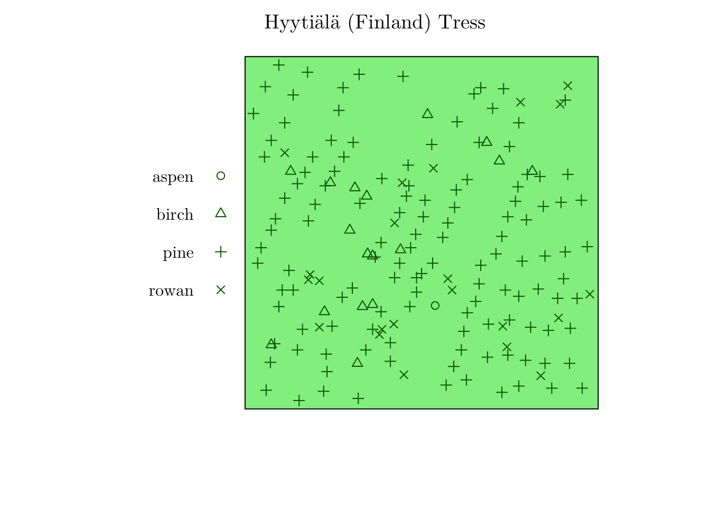
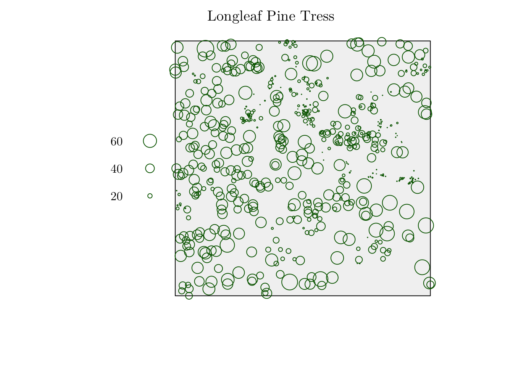

Spatio-temporal Point Pattern Data Analysis with Applications in Health Surveillance and Environmental Data
André Victor Ribeiro Amaral
Abstract
This tutorial aims to cover the basics of statistical point pattern data analysis using spatio-temporal point processes techniques for modeling disease-related and environmental data. In introductory spatial statistics courses, we usually study models to describe areal or geostatistical data. For the former, the domain is partitioned into a finite number of areas, and we model its spatial dependence by accounting for the neighbourhood structure. For the latter, we have a process defined on a continuous domain, but we only observe it at fixed and deterministic locations; therefore, our goal is to make inference for the non-observed regions. On the contrary, in point pattern data, the observations consist of a finite random subset of the domain; that is, the point locations are random, and, in that case, we are interested in modelling an underlying process that describes the intensity of the observed events. For instance, we can use point process models to describe the locations of infected individuals in a city, the position of a plant species in a large field, etc. A very simple point process model is the homogeneous Poisson process, and more elaborated models include the Cox process, Markov point process, etc. These models aim to capture different dependence structures, and inference techniques can be derived for each of them. This tutorial covers the introductory theory of point processes, and some important models for spatio-temporal problems. To do so, we will use the spatstat R package.
This tutorial is based on the Spatial Point Patterns: Methodology and Applications with
Rbook.
1 Introduction
The first step is loading the spatstat (and others) package.
if (!require("spatstat")) {
install.packages("spatstat")
library("spatstat")
}
# Other packages
library("spatstat.geom")
library("inlabru")
library("ggplot2")
library("raster")
library("rgeos")
library("ggmap")
library("INLA")
library("tmap")
library("sf")From spatstat package, we can load different point pattern data sets. For instance, we can study the positions of 86 trees observed in a forest in New Zealand (area of approximately 153 by 85 feet).
# ?nztrees
nztrees## Planar point pattern: 86 points
## window: rectangle = [0, 153] x [0, 95] feetplot(x = nztrees, main = "New Zealand Trees", pch = 17, col = "lightgreen", cols = "darkgreen", cex = 1.25)
Or the location of people sitting on a grass patch in Gordon Square, London.
# ?gordon
gordon## Planar point pattern: 99 points
## window: polygonal boundary
## enclosing rectangle: [-26.408475, 26.408475] x [-36.32095, 36.32095] metresplot(x = gordon, main = "People in Gordon Square", col = "lightblue", cols = "blue", cex = 1.25)Or the spatial locations of crimes reported in 2002, in an area of Chicago.
# ?chicago
chicago## Point pattern on linear network
## 116 points
## Multitype, with possible types:
## assault burglary cartheft damage robbery theft trespass
## Linear network with 338 vertices and 503 lines
## Enclosing window: rectangle = [0.3894, 1281.9863] x [153.1035, 1276.5602] feetplot(chicago, main = "Chicago Crime Data")Or a randomly generated (and uniformly distributed) point pattern in a “InCoB2022” window.
set.seed(1)
InCoB2022 <- readRDS(file = "data/InCoB2022.rds")
class(InCoB2022)## [1] "owin"pp <- rpoint(n = 100, f = 1, win = InCoB2022)
plot(pp, main = "Point pattern in the InCoB2022 window", pch = 21, col = "white", cols = "black", cex = 1.25)Also, we can have marked point patterns. In that case, we also collect attributed for the observed locations.
For instance, we can have the location of trees of four species in Hyytiälä, Finland. Here, we have a categorical variable as an attribute.
# ?hyytiala
hyytiala## Marked planar point pattern: 168 points
## Multitype, with levels = aspen, birch, pine, rowan
## window: rectangle = [0, 20] x [0, 20] metreshyytiala$marks## [1] pine pine pine pine pine pine pine pine pine pine pine pine
## [13] pine pine pine pine pine pine pine pine pine pine pine pine
## [25] pine pine pine pine pine pine pine pine pine pine pine pine
## [37] pine pine pine pine pine pine pine pine pine pine pine pine
## [49] pine pine pine pine pine pine pine pine pine pine pine pine
## [61] pine pine pine pine pine pine pine pine pine pine pine pine
## [73] pine pine pine pine pine pine pine pine pine pine pine pine
## [85] pine pine pine pine pine pine pine pine pine pine pine pine
## [97] pine pine pine pine pine pine pine pine pine pine pine pine
## [109] pine pine pine pine pine pine pine pine pine pine pine pine
## [121] pine pine pine pine pine pine pine pine birch birch birch birch
## [133] birch birch birch birch birch birch birch birch birch birch birch birch
## [145] birch rowan rowan rowan rowan rowan rowan rowan rowan rowan rowan rowan
## [157] rowan rowan rowan rowan rowan rowan rowan rowan rowan rowan rowan aspen
## Levels: aspen birch pine rowanplot(hyytiala, main = "Hyytiälä (Finland) Tress", col = "lightgreen", cols = "darkgreen")
Or the locations and sizes of Longleaf pine trees. Here, we have a continuous variable as an attribute.
# ?longleaf
longleaf## Marked planar point pattern: 584 points
## marks are numeric, of storage type 'double'
## window: rectangle = [0, 200] x [0, 200] metreslongleaf$marks[1:20]## [1] 32.9 53.5 68.0 17.7 36.9 51.6 66.4 17.7 21.9 25.7 25.5 28.3 11.2 33.8 2.5
## [16] 4.2 2.5 31.2 16.4 53.2plot(longleaf, main = "Longleaf Pine Tress", col = "gray95", cols = "darkgreen")
Finally, we may also have covariates for the observed region.
For instance, we can observe the location of 3,605 trees in a tropical rain forest, but also analyze the elevation (altitude) in the study region.
plot(bei.extra$elev, main = "Tropical rain forest trees (Altitude)")
plot(bei, add = T, pch = 19)2 Basic Definitions
If we want to understand and analyze point patterns we have to define the concept of a point process.
Let \(x \in \mathcal{D} \subseteq \mathbb{R}^2\), such that \(\mathcal{D}\) is the study domain. Then, a (spatial) point process \(\xi\) is defined as a locally finite random subset of \(\mathcal{D}\); that is, \(\#(\xi \cap \text{D})\) is finite for all bounded subsets \(\text{D} \subseteq \mathcal{D}\), such that \(\#(\text{A})\) denotes de cardinality of \(\text{A}\).
Note: A spatio-temporal point process can be similarly defined, such that \(x \in \mathcal{D} \subseteq \mathbb{R}^2 \times \mathbb{R}\), where the third dimension denotes the time domain. Alternatively, one can also define a spatio-temporal point process as a marked one-dimensional process, where the marks denote the point locations in space. A deeper discussion on spatio-temporal point pattern modeling can be found in this paper.
In a nutshell, a point process is random mechanism whose outcome is a point pattern. In this regard, most of the time, we are not interested in the observed points themselves, instead, we want to answer questions about the way the points were generated.
2.1 Intensity
For a (spatial) point process, we may define an intensity function as follows
Let \(\lambda: \mathcal{D} \rightarrow [0, +\infty)\), such that \(\int_{D}\lambda(x)dx < +\infty\), for all bounded \(\text{D} \subseteq \mathcal{D}\). \(\lambda(x)\) is the intensity function of a point process \(\xi\), if \[\mathbb{E}[\#(\xi \cap \text{D})] = \int_{\text{D}}\lambda(x)dx, ~ \text{D} \subseteq \mathcal{D}.\]
If \(\lambda(x) = \lambda\), \(\forall x\), that is, if it is a constant function, notice that \(\mathbb{E}[\#(\xi \cap \text{D})] = \lambda \cdot |\text{D}|\). In that case, \(\lambda\) denotes the average number of points per unit area.
Also, the intensity function is closely related to the probability density.
If \(\xi\) is a point process with intensity function \(\lambda(x)\) defined on \(\mathcal{D}\), then each individual point inside \(\mathcal{D}\) has probability density \[f(x) = \frac{\lambda(x)}{\Lambda_{\mathcal{D}}},\] where \[\Lambda_{\mathcal{D}} = \int_{\mathcal{D}}\lambda(x)dx.\]
In spatstat we can generate a point pattern containing \(n\) independent, identically distributed random points with intensity \(f\) using the rpoint() function.
f <- function (x, y) { (x^2 + y^2) }
x <- seq(-1, 1, 0.05)
y <- seq(-1, 1, 0.05)
z <- outer(X = x, Y = y, FUN = f)
w <- owin(xrange = c(-1, 1), yrange = c(-1, 1)) # Area: (2 units x 2 units)
pp <- rpoint(n = 2500, f = f, win = w)
par(mfrow = c(1, 2))
persp(x, y, z, theta = 30)
plot(pp, main = "")2.1.1 Estimating the intensity function
If the intensity function is assumed to be constant, we say we have a homogeneous process. In that case, \(\lambda\) can be estimated as \[\hat{\lambda} = \frac{\#(\mathbf{x})}{|\text{D}|},\] where \(\mathbf{x}\) is the point pattern data set, observed in a window \(\text{D}\).
In spatstat, we can compute such a quantity using intensity.ppp().
intensity.ppp(pp)## [1] 625However, the homogeneous assumption may not hold. In that case, a simple way to check for non-homogeneity is to check whether regions of equal area contain roughly equal number of points. In spatstat, we can do this using the quadratcount() function.
q <- quadratcount(X = pp, nx = 5, ny = 5)
plot(q, main = "")By visually inspecting the counts, we could argue that the process might not be homogeneous.
However, to make it formal, we will conduct a statistical test. In particular, we will use a \(\chi^2\) test for uniformity (i.e., testing homogeneity assuming independence). In spatstat, we can use the quadrat.test() function.
ts <- quadrat.test(X = pp, nx = 5, ny = 5)
ts##
## Chi-squared test of CSR using quadrat counts
##
## data: pp
## X2 = 894.68, df = 24, p-value < 2.2e-16
## alternative hypothesis: two.sided
##
## Quadrats: 5 by 5 grid of tilesAs the p-value is too small (< 2.2e-16), we reject the null hypothesis that the data pattern is a realization of a uniform Poisson point process (more about that later).
If the process is assumed to non non-homogeneous, that is, if \(\lambda(x)\) varies in space, the intensity function can be estimated non-parametrically by kernel estimation.
Given a point pattern \(\mathbf{x} = (x_1, \cdots, x_n)\) in a window \(\mathcal{D}\), the kernal estimate of intensity is \[\hat{\lambda}(x) = \sum_{i = 1}^{n}\kappa(x - x_i)\epsilon(x, xi),\] such that \(\kappa(x)\) is the smoothing kernel and \(\epsilon(u, v)\) is a correction for edge effects.
The kernel \(\kappa(x)\) must be a probability density, and the standard deviation of the kernel is the smoothing bandwidth.
A larger bandwidth results in a smoother estimated process. Also, the choice of bandwidth involves a trade-off between bias as variance; typically, as the the bandwidth increases, the bias increases and the variance decreases.
In spatstat, we can use the density.ppp() function for kernel estimation. However, we have to manually set the smoothing bandwidth.
pp <- rpoint(n = 250, f = f, win = w)
par(mfrow = c(1, 4))
plot(pp, main = "")
d1 <- density.ppp(x = pp, sigma = 0.1)
d2 <- density.ppp(x = pp, sigma = 0.5)
d3 <- density.ppp(x = pp, sigma = 1.0)
plot(d1, main = "0.1", bbox)
plot(d2, main = "0.5")
plot(d3, main = "1.0") # Notice the plot scales are differentHowever, we can use a “likelihood cross-validation method” to determine sigma. For instance, we can use the bw.ppl function to do so. Also, we can apply an edge correction (diggle = TRUE).
(sigma <- bw.ppl(X = pp))## sigma
## 0.2029696d1 <- density.ppp(x = pp, sigma = sigma)
d2 <- density.ppp(x = pp, sigma = sigma, diggle = T)
par(mfrow = c(1, 2))
plot(d1, main = "No edge correction")
plot(d2, main = "Edge Correction")Also, we can compute \(\mathbb{E}[\#(\xi \cap \text{D})]\) as follows
# Compute the integral \int_D \lambda(x)dx numerically.
n_points <- function (d) {
total_area <- diff(d$xrange) * diff(d$yrange)
pixel_area <- total_area / prod(d$dim)
sum(d$v * pixel_area)
}
n_points(d1)## [1] 240.7121n_points(d2)## [1] 2503 Point Process Models
From this point on, we will assume a parametric model that describes the point process dynamics. This will allow us to test for the effect of covariates, compute uncertainty, compare models, etc.
3.1 Poisson Point Process
A very important model for point process analysis is the Poisson process. Such a modeling approach gives access to a wide variety of powerful statistical techniques, and will be used as a building block for more complex models.
A point process \(\xi\) defined on \(\mathcal{D}\) is a Poisson point process with intensity function \(\lambda(x)\) if the following properties are satisfied
For any bounded \(\text{D} \subseteq \mathcal{D}\), \(\mathcal{N}(\text{D}) \sim \text{Poisson}(\int_{\text{D}}\lambda(x)dx)\).
For any bounded \(\text{D} \subseteq \mathcal{D}\) and \(n \in \mathbb{N}\), conditional on \(\mathcal{N}(\text{D}) = n\), points in \(\xi \cap \text{D}\) are independent and identically distributed with intensity proportional to \(\lambda(x)\).
We can include a covariates into the Poisson point process by setting the intensity function as follows \[\lambda(x) = \exp\{\alpha + \beta \cdot \text{z}(x)\},\] where \(\alpha\) and \(\beta\) are coefficients to be estimated, and \(\text{z}(x)\) is a spatial covariate.
To fit such a model in spatstat, we can use the function ppm(X ~ 1 + cov, ...), such that X is the point pattern, and 1 + cov specifies the logarithm of the intensity function for such a model.
3.1.1 Example 1
As a first example, we will work with the “Tropical rain forest trees” data. However, now, we will analyze another covariate named grad. Similar to before,
bei## Planar point pattern: 3604 points
## window: rectangle = [0, 1000] x [0, 500] metresplot(bei.extra$grad, main = "Tropical rain forest trees (Elevation Gradient)")
plot(bei, add = T, pch = 19)First, we will fit a model with no covariates. In other words, we will assume a homogeneous Poisson process.
fit1 <- ppm(bei ~ 1)
fit1## Stationary Poisson process
## Intensity: 0.007208
## Estimate S.E. CI95.lo CI95.hi Ztest Zval
## log(lambda) -4.932564 0.01665742 -4.965212 -4.899916 *** -296.1182From the above fitted model, notice that we have an estimate for the intercept \(\alpha\), as well as \(\hat{\lambda}\). In particular, we can say that we expect to observe \(\hat{\lambda} = 0.007208\) trees per square meter.
Alternatively, we can fit a model with covariates.
fit2 <- ppm(bei ~ 1 + grad, data = bei.extra)
fit2## Nonstationary Poisson process
##
## Log intensity: ~1 + grad
##
## Fitted trend coefficients:
## (Intercept) grad
## -5.391053 5.026710
##
## Estimate S.E. CI95.lo CI95.hi Ztest Zval
## (Intercept) -5.391053 0.03001787 -5.449887 -5.332219 *** -179.5948
## grad 5.026710 0.24534296 4.545847 5.507573 *** 20.4885From the fitted model, we can say that \(\hat{\lambda}(x) = \exp\{-5.39 + 5.02 \cdot \texttt{grad}(x)\}.\) In that case, the expected number of trees per square meter on a level surface is \(\exp\{-5.39\} = 0.004559\) (or \(45.59\) trees per hectare).
To see how the intensity function varies with grad, we can use the effectfun() function.
plot(effectfun(model = fit2, covname = "grad", se.fit = T))
Also, we can plot to predicted intensity process for all locations.
plot(fit2, se = F)3.1.2 Example 2
However, if no covariates are available, and if we suspect that the process is non-homogeneous, we can use the Cartesian coordinates as covariates. For instance, let’s analyze the point pattern that records the location of “Japanese black pines” in a square sampling region.
# ?residualspaper # From Baddeley et al (2005).
jpines <- residualspaper[["Fig1"]]
jpines## Planar point pattern: 204 points
## window: rectangle = [0, 10] x [0, 10] metresplot(jpines, pch = 19, cex = 1.25, main = "Japanese Pines")In that case, the correspond process seems to be non-homogeneous, but no spatial covariates are available. To overcome this issue, we can do as follows
(fit <- ppm(jpines ~ x + y))## Nonstationary Poisson process
##
## Log intensity: ~x + y
##
## Fitted trend coefficients:
## (Intercept) x y
## 0.591839808 0.014329205 0.009643885
##
## Estimate S.E. CI95.lo CI95.hi Ztest Zval
## (Intercept) 0.591839808 0.18854120 0.22230585 0.96137376 ** 3.1390477
## x 0.014329205 0.02427982 -0.03325837 0.06191678 0.5901693
## y 0.009643885 0.02426889 -0.03792226 0.05721003 0.3973765plot(fit, se = F)However, the estimated intensity does not seem to describe well the point patter. This is due to the rigid structure we imposed for the intensity function. In this case, \(\hat{\lambda}((x, y)) = \exp\{0.59 + 0.014x + 0.009y\}\).
Alternatively, we can fit a model with log-cubic coordinates. To do this in spatstat, we can use the polynom() function.
(fit_cubic <- ppm(jpines ~ polynom(x, y, 3)))## Nonstationary Poisson process
##
## Log intensity: ~x + y + I(x^2) + I(x * y) + I(y^2) + I(x^3) + I(x^2 * y) + I(x
## * y^2) + I(y^3)
##
## Fitted trend coefficients:
## (Intercept) x y I(x^2) I(x * y) I(y^2)
## 0.421606456 0.715190037 -0.661633148 -0.144427983 0.078944294 0.087888968
## I(x^3) I(x^2 * y) I(x * y^2) I(y^3)
## 0.007726421 -0.003839950 -0.003853943 -0.003208131
##
## Estimate S.E. CI95.lo CI95.hi Ztest
## (Intercept) 0.421606456 0.646106369 -0.8447387582 1.687951670
## x 0.715190037 0.354226830 0.0209182084 1.409461866 *
## y -0.661633148 0.302536675 -1.2545941349 -0.068672160 *
## I(x^2) -0.144427983 0.068892184 -0.2794541833 -0.009401783 *
## I(x * y) 0.078944294 0.051849048 -0.0226779730 0.180566560
## I(y^2) 0.087888968 0.057799950 -0.0253968522 0.201174789
## I(x^3) 0.007726421 0.004283142 -0.0006683825 0.016121224
## I(x^2 * y) -0.003839950 0.003530714 -0.0107600209 0.003080122
## I(x * y^2) -0.003853943 0.003674725 -0.0110562721 0.003348386
## I(y^3) -0.003208131 0.003606902 -0.0102775282 0.003861266
## Zval
## (Intercept) 0.6525341
## x 2.0190171
## y -2.1869519
## I(x^2) -2.0964350
## I(x * y) 1.5225794
## I(y^2) 1.5205717
## I(x^3) 1.8039144
## I(x^2 * y) -1.0875846
## I(x * y^2) -1.0487705
## I(y^3) -0.8894424plot(fit_cubic, se = F, main = "Fitted trend (log-cubic coordinates)")Finally, we can compare the two models using anova.ppp(). Here, the theoretically optimal technique is the “Likelihood Ratio Test” (see Section 10.3.2, “Spatial Point Patterns: Methodology and Applications with R”).
anova.ppm(fit, fit_cubic, test = "LR")## Analysis of Deviance Table
##
## Model 1: ~x + y Poisson
## Model 2: ~x + y + I(x^2) + I(x * y) + I(y^2) + I(x^3) + I(x^2 * y) + I(x * y^2) + I(y^3) Poisson
## Npar Df Deviance Pr(>Chi)
## 1 3
## 2 10 7 30.336 8.238e-05 ***
## ---
## Signif. codes: 0 '***' 0.001 '**' 0.01 '*' 0.05 '.' 0.1 ' ' 1In that case, I reject the null hypothesis that the simpler model is as good as the complex model. Thus, I would work with fit_cubic instead.
3.1.3 Back to Example 1
Getting back to Example 1, we can also fit a more complex model. In particular, we will do as follows,
(fit <- ppm(bei ~ polynom(grad, elev, 2), data = bei.extra))## Nonstationary Poisson process
##
## Log intensity: ~grad + elev + I(grad^2) + I(grad * elev) + I(elev^2)
##
## Fitted trend coefficients:
## (Intercept) grad elev I(grad^2) I(grad * elev)
## -1.550702e+02 5.106076e+01 2.025721e+00 -6.388416e+01 -2.054512e-01
## I(elev^2)
## -6.871527e-03
##
## Estimate S.E. CI95.lo CI95.hi Ztest
## (Intercept) -1.550702e+02 8.4491373845 -1.716302e+02 -1.385102e+02 ***
## grad 5.106076e+01 8.1476798566 3.509160e+01 6.702992e+01 ***
## elev 2.025721e+00 0.1141637064 1.801964e+00 2.249477e+00 ***
## I(grad^2) -6.388416e+01 4.4682504606 -7.264177e+01 -5.512655e+01 ***
## I(grad * elev) -2.054512e-01 0.0545076013 -3.122842e-01 -9.861830e-02 ***
## I(elev^2) -6.871527e-03 0.0003859161 -7.627908e-03 -6.115145e-03 ***
## Zval
## (Intercept) -18.353381
## grad 6.266908
## elev 17.743998
## I(grad^2) -14.297354
## I(grad * elev) -3.769222
## I(elev^2) -17.805753pred <- predict(fit)
n_points(predict(fit))## [1] 3607.583M <- persp(x = bei.extra$elev, colin = pred, colmap = topo.colors, shade = 0.4, theta = -55, phi = 25, expand = 6, box = F, apron = T, visible = T, main = "Fitted trend (color)")
perspPoints(bei, Z = bei.extra$elev, M = M, pch = 21, cex = 0.25)Also, we can get detailed summaries for the estimates.
coef(summary(fit))## Estimate S.E. CI95.lo CI95.hi Ztest
## (Intercept) -1.550702e+02 8.4491373845 -1.716302e+02 -1.385102e+02 ***
## grad 5.106076e+01 8.1476798566 3.509160e+01 6.702992e+01 ***
## elev 2.025721e+00 0.1141637064 1.801964e+00 2.249477e+00 ***
## I(grad^2) -6.388416e+01 4.4682504606 -7.264177e+01 -5.512655e+01 ***
## I(grad * elev) -2.054512e-01 0.0545076013 -3.122842e-01 -9.861830e-02 ***
## I(elev^2) -6.871527e-03 0.0003859161 -7.627908e-03 -6.115145e-03 ***
## Zval
## (Intercept) -18.353381
## grad 6.266908
## elev 17.743998
## I(grad^2) -14.297354
## I(grad * elev) -3.769222
## I(elev^2) -17.8057533.2 Cox Process
Before, for Poisson point process, we assumed that points of the process are independent of each other. However, in most real applications, this might not be the case.
To overcome this limitation, we will extend the Poisson process to what is called a Cox process. In a nutshell, the Cox process allows the modelling of the unobservable spatial heterogeneity.
A Cox process can be seen as a doubly stochastic process since its intensity function is a random process itself. More specifically, \(\xi\) is a Cox process driven by \(\Lambda(x)\) if
\(\{\Lambda(x); x \in \mathcal{D}\}\) is a non-negative valued stochastic process.
Conditional on \(\{\Lambda(x) = \lambda(x); \mathbf{x} \in \mathcal{D}\}\), \(\xi\) is a Poisson process with intensity function \(\lambda(x)\).
3.2.1 Log-Gaussian Cox Process
A particular case of a Cox process, named log-Gaussian Cox process, can be constructed by setting \(\log\{\Lambda(x)\} = \mu^{\star}(x) + \zeta(x)\), such that \(\mu(x) = \exp\{\mu^{\star}(x)\}\) is possibly interpreted as the mean structure of \(\Lambda(x)\), and \(\zeta(x)\) is a stationary Gaussian process, such that \(\mathbb{E}(\zeta(x)) = -\sigma^2/2\), \(\forall x\), and \(\text{Cov}(\zeta(x_1), \zeta(x_2)) = \phi(h) = \sigma^2 \rho(h)\), where \(h = ||x_1 - x_2||\) and \(\sigma^2\) is the variance of \(\zeta(x)\) .
For instance, the correlation structure can be set as a Matérn model, that is, \[ \rho(h) = \frac{1}{2^{\nu - 1}\Gamma(\nu)}(\kappa \cdot h)^{\nu} \,\text{K}_{\nu}(\kappa \cdot h), \] such that \(\nu\) and \(\kappa\) are unknown parameters, and \(\text{K}_{\nu}(\cdot)\) is a modified Bessel function of \(2^{\text{nd}}\) order. For most implemented inference procedures, \(\nu\) is manually defined, though, as the optimization routine might fail when dealing with the special functions.
Note: the “maximum likelihood” method for fitting a Poisson point process model is not possible to be extended to a LGCP model, as the likelihood is intractable. Thus, other methods are used for estimation.
3.2.1.1 INLA and R-INLA
In that case, we will use the Integrated Nested Laplace Approximation (INLA), implemented in the R-INLA package.
In a nutshell, INLA is a method for approximating Bayesian inference in latent Gaussian models. In particular, it can be used to fit models of the form \[ y_i|S(x_i), \theta \sim \pi(y_i|S(x_i), \theta), \text{ for } i \in \{1, \cdots, n\} \\ S(x)|\theta \sim \text{Normal}(\mu(\theta), Q(\theta)^{-1}) \\ \theta \sim \pi(\theta), \] where \(y = (y_1, \ldots, y_n)\) is the vector or observed values, \(x = (x_1, \ldots, x_n)\) is a Gaussian random field, and \(\theta = (\theta_1, \ldots, \theta_k)\), for some \(k \in \mathbb{N}\), is a vector of hyperparameters. \(\mu(\theta)\) and \(Q(\theta)\) represent the mean vector and the precision matrix, respectively.
3.2.1.1.1 Details
However, although we can use a Stochastic Partial Differential Equation (SPDE)-approach to fit LGCP models using INLA (as in this paper), we will consider a partition of \(\mathcal{D}\) given by cells \(c_{i, j}\), for some set of index \((i, j)\).
First, recall that if \(\xi\) is a LGCP, the mean number of events in a cell \(c_{ij}\) is given by the integral of the intensity over the cell, that is, \(\Lambda_{i, j}(x) = \int_{c_{i,j}}\exp\{\zeta(x)\}dx\). Then, for sufficiently small cells, such an integral can be approximated by \(\Lambda_{i, j}(x) \approx |c_{i,j}|\exp\{\zeta(x)\}\), where \(|c_{i, j}|\) is the area of the cell \(c_{i, j}\).
Thus, conditional on the latent Gaussian field \(\zeta(x)\), the observed number of locations in the grid cell \(c_{i, j}\), \(\forall i, j\), are independent and Poisson distributed as follows \[ \mathcal{N}(c_{ij})|\zeta(x) \sim \text{Poisson}(|c_{i, j}| \cdot \exp\{\zeta(x)\}), \] where \(\zeta(x)\), as before, is a Gaussian field (that might contain covariates information).
As a reference for such an approach, one can refer to this paper.
3.2.1.2 Example 3
For the first example, we will analyze the spatial locations of cases of cancer of the larynx and cancer of the lung.
?chorley
chorley## Marked planar point pattern: 1036 points
## Multitype, with levels = larynx, lung
## window: polygonal boundary
## enclosing rectangle: [343.45, 366.45] x [410.41, 431.79] kmplot(chorley, cols = c("red", rgb(0, 1, 0, 0.5)), pch = c(19, 4), cex = 0.75, main = "Cancer cases")lung <- chorley[chorley$marks == "lung"]
lung <- ppp(x = lung$x, y = lung$y, window = lung$window)
plot(lung, cols = "green", pch = 4, cex = 0.75, main = "Lung-cancer cases")Based on the previous “Details” section, the step is creating a grid based study area.
resolution <- 0.25
map <- as(st_as_sf(lung$window), "Spatial") # Convert it to a ``SpatialPolygonsDataFrame`` object
map$cancer <- "lung"
plot(map)r <- raster(map, resolution = resolution) # Create a ``raster`` object based on the map and resolution
(n_row <- nrow(r))## [1] 86(n_col <- ncol(r))## [1] 92Now, we have to count the number of observations within all cells and save it on the r object. To do so, we can create a SpatialPoints object based on the observations locations and use the cellFromXY() to count the number of points in each cell.
r[] <- 0
dpts <- SpatialPoints(cbind(rev(lung$x), rev(lung$y))) # Convert the locations to a ``SpatialPoints`` object
(tab <- table(cellFromXY(r, dpts))) # Get the cell number, based on the ``raster`` object, for each observation, and table them.##
## 532 719 1046 1048 1136 1137 1138 1139 1228 1229 1230 1232 1245 1257 1320 1321
## 1 1 2 1 3 2 2 1 1 2 3 4 3 1 1 1
## 1322 1325 1338 1340 1341 1410 1412 1413 1414 1419 1420 1421 1429 1430 1432 1434
## 4 2 2 1 1 4 2 1 6 3 6 1 2 1 1 1
## 1502 1503 1504 1506 1507 1508 1512 1521 1522 1529 1530 1594 1596 1597 1598 1599
## 5 3 2 3 2 1 2 1 1 1 1 1 1 2 1 1
## 1600 1601 1602 1604 1605 1613 1614 1621 1622 1623 1624 1625 1627 1628 1636 1680
## 1 1 1 4 3 3 8 2 1 1 1 2 2 5 1 2
## 1692 1693 1694 1695 1696 1697 1705 1706 1715 1716 1724 1733 1771 1774 1784 1785
## 1 1 1 1 6 1 1 5 1 2 1 2 1 3 1 2
## 1786 1787 1788 1789 1797 1798 1799 1800 1801 1802 1809 1810 1811 1812 1876 1877
## 7 4 2 3 1 1 3 4 2 3 3 1 1 2 2 3
## 1878 1890 1891 1892 1895 1905 1951 1952 1955 1958 1969 1971 1974 1976 1979 1982
## 4 2 2 2 1 1 1 2 2 2 1 1 1 1 1 1
## 1983 1984 1985 1986 1987 1994 1995 2043 2044 2046 2066 2067 2068 2069 2072 2074
## 1 3 3 4 1 1 2 2 2 1 2 2 2 2 1 1
## 2076 2086 2088 2089 2131 2134 2136 2137 2138 2139 2146 2148 2160 2162 2163 2165
## 2 1 1 1 1 1 1 1 1 1 2 1 3 5 1 1
## 2167 2168 2169 2170 2174 2226 2231 2232 2235 2238 2239 2252 2253 2254 2260 2261
## 2 10 5 2 2 3 1 1 1 2 1 2 3 5 1 1
## 2262 2330 2336 2352 2353 2410 2422 2423 2437 2444 2446 2500 2502 2515 2516 2624
## 4 2 2 1 1 2 3 1 1 2 1 2 1 3 2 1
## 2640 2688 2691 2726 2778 2870 2871 2873 2970 2991 3002 3052 3053 3070 3072 3083
## 2 2 1 2 2 1 2 1 1 1 1 1 1 1 1 1
## 3086 3093 3097 3173 3174 3175 3186 3200 3235 3259 3262 3265 3266 3267 3268 3278
## 3 1 1 1 2 2 1 1 2 1 3 1 2 6 3 2
## 3325 3344 3351 3352 3353 3355 3356 3357 3358 3395 3418 3442 3443 3444 3445 3446
## 1 1 1 4 3 1 2 4 3 2 1 1 3 5 1 6
## 3447 3448 3449 3450 3451 3454 3462 3467 3474 3484 3531 3534 3535 3536 3539 3540
## 2 1 3 1 1 4 1 1 2 1 2 2 1 2 1 1
## 3541 3543 3546 3555 3621 3622 3623 3624 3626 3629 3630 3631 3632 3633 3634 3635
## 1 4 1 4 1 1 1 6 8 1 4 4 2 5 5 6
## 3636 3646 3647 3648 3662 3714 3716 3718 3719 3720 3721 3724 3725 3727 3728 3756
## 1 1 3 1 1 5 2 2 4 1 3 2 1 1 4 1
## 3757 3808 3809 3810 3811 3812 3813 3816 3831 3832 3840 3849 3850 3901 3902 3903
## 1 1 1 1 3 1 1 2 2 2 2 3 2 2 1 1
## 3922 3929 3973 3988 4015 4032 4160 4199 4202 4204 4208 4292 4354 4367 4374 4384
## 2 1 1 1 1 1 1 1 1 1 2 1 1 3 1 1
## 4389 4464 4476 4480 4556 4557 4568 4622 4623 4648 4650 4661 4666 4667 4714 4724
## 1 2 1 1 3 1 2 1 1 3 1 1 1 1 1 1
## 4741 4749 4752 4756 4757 4805 4806 4833 4836 4845 4847 4896 4898 4899 4908 4918
## 1 1 3 1 1 1 1 1 2 2 1 1 1 1 1 1
## 4925 4927 4928 4935 4936 4937 4938 4939 4940 5016 5022 5028 5029 5030 5031 5032
## 3 1 3 2 3 1 3 6 3 1 2 5 2 2 3 2
## 5108 5117 5118 5120 5121 5122 5123 5124 5210 5211 5213 5214 5215 5216 5276 5279
## 1 1 1 4 1 2 2 4 2 2 1 1 4 5 2 2
## 5280 5289 5302 5303 5304 5305 5306 5307 5308 5309 5370 5371 5391 5392 5393 5394
## 1 1 2 6 6 1 2 5 5 2 2 1 1 1 1 3
## 5395 5396 5397 5399 5400 5463 5464 5485 5486 5487 5488 5489 5490 5491 5492 5493
## 6 2 1 5 3 4 2 1 4 10 1 3 3 3 2 2
## 5554 5556 5557 5563 5577 5578 5579 5580 5581 5582 5583 5649 5667 5668 5669 5670
## 1 2 1 1 2 1 7 4 3 3 1 2 1 1 6 3
## 5671 5672 5676 5760 5761 5762 5764 5766 5835 5843 5856 5941 5948 6031 6034 6123
## 3 5 1 3 2 6 4 4 1 1 1 1 1 2 1 1
## 6204 6310 6328 6388 6395 6399 6400 6401 6402 6403 6418 6491 6492 6504 6581 6584
## 1 1 1 1 2 1 2 2 4 1 1 1 6 1 2 1
## 6585 6597 6600 6601 6602 6603 6683 6691 6692 6694 6770 6773 6778 6783 6784 6785
## 4 1 5 2 1 6 1 2 2 1 1 1 1 1 1 2
## 6786 6787 6875 6876 6952 6965 6966 6967 7040 7059
## 2 1 3 3 1 3 7 1 2 2r[as.numeric(names(tab))] <- tab # Assign the number of observed events to the ``raster`` object
plot(r)
plot(map, add = T)Then, we can create a grid variable based on the raster object.
grid <- rasterToPolygons(r) # Convert it to a ``SpatialPolygonsDataFrame`` object
grid <- grid[as.vector(matrix(1:nrow(grid), nrow = n_row, ncol = n_col, byrow = T)), ] # Rearrange the indices numbering
grid$id <- 1:nrow(grid)
grid$Y <- grid$layer
grid$cellarea <- resolution * resolution
plot(grid)Lastly, we just compute the intersection between grid and map. This can be done using the raster::intersect() function (from the raster package, as the namespace suggests).
gridmap <- raster::intersect(x = grid, y = map) # Compute the intersection between
grid <- grid[grid$id %in% gridmap$id, ]
plot(grid)
plot(map, border = "red", lwd = 1, add = T)summary(grid)## Object of class SpatialPolygonsDataFrame
## Coordinates:
## min max
## x 343.45 366.45
## y 410.29 431.79
## Is projected: NA
## proj4string : [NA]
## Data attributes:
## layer id Y cellarea
## Min. : 0.0000 Min. : 19 Min. : 0.0000 Min. :0.0625
## 1st Qu.: 0.0000 1st Qu.:2637 1st Qu.: 0.0000 1st Qu.:0.0625
## Median : 0.0000 Median :4444 Median : 0.0000 Median :0.0625
## Mean : 0.1852 Mean :4289 Mean : 0.1852 Mean :0.0625
## 3rd Qu.: 0.0000 3rd Qu.:5919 3rd Qu.: 0.0000 3rd Qu.:0.0625
## Max. :10.0000 Max. :7896 Max. :10.0000 Max. :0.0625Now that we have prepared all the data, we can fit the model using R-INLA. To do so, we have to specify a formula and fit the model using the inla() function.
formula <- Y ~ 1 + f(id, model = "matern2d", nrow = n_row, ncol = n_col, nu = 1) # Intercept + Matérn spatial random effects
res <- inla(formula,
family = "poisson",
data = grid@data,
E = cellarea) # Acts like an offsetsummary(res)##
## Call:
## c("inla.core(formula = formula, family = family, contrasts = contrasts,
## ", " data = data, quantiles = quantiles, E = E, offset = offset, ", "
## scale = scale, weights = weights, Ntrials = Ntrials, strata = strata,
## ", " lp.scale = lp.scale, link.covariates = link.covariates, verbose =
## verbose, ", " lincomb = lincomb, selection = selection, control.compute
## = control.compute, ", " control.predictor = control.predictor,
## control.family = control.family, ", " control.inla = control.inla,
## control.fixed = control.fixed, ", " control.mode = control.mode,
## control.expert = control.expert, ", " control.hazard = control.hazard,
## control.lincomb = control.lincomb, ", " control.update =
## control.update, control.lp.scale = control.lp.scale, ", "
## control.pardiso = control.pardiso, only.hyperparam = only.hyperparam,
## ", " inla.call = inla.call, inla.arg = inla.arg, num.threads =
## num.threads, ", " blas.num.threads = blas.num.threads, keep = keep,
## working.directory = working.directory, ", " silent = silent, inla.mode
## = inla.mode, safe = FALSE, debug = debug, ", " .parent.frame =
## .parent.frame)")
## Time used:
## Pre = 2.63, Running = 80.3, Post = 0.127, Total = 83
## Fixed effects:
## mean sd 0.025quant 0.5quant 0.975quant mode kld
## (Intercept) -2.811 0.595 -4.127 -2.756 -1.795 NA 0
##
## Random effects:
## Name Model
## id Matern2D model
##
## Model hyperparameters:
## mean sd 0.025quant 0.5quant 0.975quant mode
## Precision for id 0.12 0.027 0.071 0.119 0.176 NA
## Range for id 11.07 1.689 8.409 10.851 15.030 NA
##
## Marginal log-Likelihood: -1781.60
## is computed
## Posterior summaries for the linear predictor and the fitted values are computed
## (Posterior marginals needs also 'control.compute=list(return.marginals.predictor=TRUE)')grid$RE <- res$summary.random$id[grid$id, "mean"]
gridborder <- gUnaryUnion(grid) # Plot the random effects using ``tmap`` package
tm_shape(grid) +
tm_polygons(col = c("RE"),
style = "cont", border.col = "transparent", midpoint = NA) +
tm_shape(gridborder) + tm_borders() +
tm_facets(ncol = 1) + tm_legend(legend.position = c("left", "bottom"))From the above map, we observe a non-constant pattern of the spatially structured random effect suggesting that the intensity of the process that generates the cancer-diagnosed patients’ locations may be affected by other spatial factors that have not been considered in the model.
cellarea <- resolution * resolution
grid$Mean <- res$summary.fitted.values[, "mean"] * cellarea
grid$Lower <- res$summary.fitted.values[, "0.025quant"] * cellarea
grid$Upper <- res$summary.fitted.values[, "0.975quant"] * cellarea
# Changing the margin size to accommodate the plot caption
bbox_new <- st_bbox(grid)
xrange <- bbox_new$xmax - bbox_new$xmin # range of x values
yrange <- bbox_new$ymax - bbox_new$ymin # range of y values
bbox_new[1] <- bbox_new[1] - (0.25 * xrange)
bbox_new <- bbox_new %>% st_as_sfc()
# Main plot for the estimated intensity (along with a 95% equal-tail credible interval)
tm_shape(grid, bbox = bbox_new) +
tm_polygons(col = c("Lower", "Mean", "Upper"),
style = 'fixed', border.col = "transparent",
breaks = c(0, 0.1, 0.2, 0.3, 0.4, 0.5, 0.6, 0.7, 0.8, 0.9, 1.0, 2, 5, 10, ceiling(max(grid$Upper)))) +
tm_shape(gridborder) + tm_borders() +
tm_facets(ncol = 3) + tm_legend(legend.position = c("left", "bottom"))Finally, from the above plot, we can identify (also accounting for the uncertainty) the areas with high incidence of lung-cancer patients (denoted by the estimated intensity process). Based on such information, policymakers can focus their resources on areas that matter the most when dealing with cancer management.
Note: One can also analyze a spatio-temporal point process in a similar manner. That is, letting the cells \(c_{(i, j), t}\) depend also on time, we can include a temporal random effect in the R-INLA formula (e.g., f(id_time, model = "ar1")), with possibly space-time interaction terms (see this paper). That is precisely what we will do in our next example.
3.2.1.3 Example 4
For the last example, we will analyze the location of terrorism attacks in a given country over the years. The two data objects (terror_country.rds and area_country.rds) can be downloaded from here and here, respectively.
terror_country <- readRDS(file = "data/terror_country.rds")
table(terror_country$country)##
## AFG AGO ALB ARE ARG ARM AUS AUT AZE BDI BEL BFA BGD
## 4783 1 6 4 13 5 33 5 4 204 9 17 813
## BGR BIH BLR BRA CAF CAN CHE CHL CHN CIV CMR COD COG
## 11 9 6 10 112 22 5 40 54 31 118 353 2
## COL CYP CZE DEU DOM DZA ECU EGY ERI ESP EST ETH FIN
## 659 13 14 126 1 169 6 550 16 17 3 31 10
## FRA GBR GEO GHA GIN GNB GRC GTM GUY HND HRV HTI HUN
## 106 330 20 2 4 2 217 4 1 4 5 1 3
## IDN IND IRL IRN IRQ ISL ISR ITA JAM JOR JPN KAZ KEN
## 125 4190 133 61 15022 2 324 49 1 14 16 16 279
## KGZ KHM KOR KWT LAO LBN LBR LBY LKA MAR MDA MDG MEX
## 10 2 2 3 2 219 2 1156 19 2 2 6 48
## MKD MLI MMR MNE MOZ MRT MWI MYS NER NGA NIC NLD NOR
## 7 278 108 3 88 2 1 36 86 2458 1 12 4
## NPL NZL PAK PAN PER PHL POL PRT PRY PSE QAT RUS RWA
## 224 2 8116 1 22 2328 2 2 49 527 1 707 26
## SAU SDN SEN SLE SOM SSD SVK SWE SWZ SYR TCD THA TJK
## 153 381 10 1 2087 120 1 52 1 1398 26 1039 8
## TKM TTO TUN TUR TWN TZA UGA UKR URY USA UZB VEN YEM
## 7 3 61 651 2 19 32 1373 1 188 1 14 1712
## YUG ZAF ZWE
## 28 61 5Aiming to have a larger data set, we analyze the country with the highest number of obseved events, i.e., IRQ. Also, we will analyze observed events that occurred from 2010 to 2015.
country_code <- "IRQ"
terror_country <- terror_country[terror_country$country == country_code, ]
terror_country <- terror_country[(terror_country$iyear >= 2010) & (terror_country$iyear <= 2015), ]
coordinates(terror_country) <- c("longitude", "latitude")
proj4string(terror_country) <- "+proj=longlat"
area_country <- readRDS(file = "data/area_country.rds")
area_country <- area_country[area_country$sov_a3 == country_code, ]
area_country <- spTransform(x = area_country, CRSobj = CRS("+proj=longlat"))
plot(area_country, main = "")
plot(terror_country, add = T, col = "green")Now, given a partition, we can do as before, and count the number of events in each cell. However, notice that we also have to account for the variable year when doing so.
resolution <- 0.5
r <- raster(area_country, resolution = resolution)
(n_row <- nrow(r))## [1] 17(n_col <- ncol(r))## [1] 20terror_country$year <- terror_country$iyear - min(terror_country$iyear) + 1
n_years <- length(unique(terror_country$year))
tab <- list()
ras <- list()
grids <- list()
grids_map <- list()
par(mfrow = c(2, 3), mar=c(2, 2, 2, 6))
for (y in 1:n_years) {
tab[[y]] <- table(cellFromXY(r, terror_country[terror_country$year == y, ]))
ras[[y]] <- r
ras[[y]][as.numeric(names(tab[[y]]))] <- tab[[y]]
values(ras[[y]])[is.na(values(ras[[y]]))] <- 0
grids[[y]] <- rasterToPolygons(ras[[y]])
grids[[y]] <- grids[[y]][as.vector(matrix(1:nrow(grids[[y]]), nrow = n_row, ncol = n_col, byrow = T)), ]
grids[[y]]$id <- 1:nrow(grids[[y]])
grids[[y]]$Y <- grids[[y]]$layer
grids[[y]]$cellarea <- resolution * resolution
grids_map[[y]] <- raster::intersect(x = grids[[y]], y = area_country)
grids[[y]] <- grids[[y]][grids[[y]]$id %in% grids_map[[y]]$id, ]
plot(ras[[y]], main = y)
plot(area_country, add = T)
}Then, we can create a data object with the extra id_time index.
for (y in 1:n_years) {
if (y == 1) {
data_inla <- grids[[y]]@data
} else {
data_inla <- rbind(data_inla, grids[[y]]@data)
}
}
data_inla <- cbind(data_inla, id_time = rep(x = 1:n_years, each = nrow(grids[[1]])))
data_inla[c(1:3, ((nrow(data_inla) - 2):nrow(data_inla))), ]## layer id Y cellarea id_time
## 141 0 8 0 0.25 1
## 161 0 9 0 0.25 1
## 181 0 10 0 0.25 1
## 2795 2 320 2 0.25 6
## 2995 1 321 1 0.25 6
## 3005 0 338 0 0.25 6Finally, we can fit the model. In that case, we will define the latent Gaussian field \(\zeta(x, t)\) as follows. For \(x_i \in \mathcal{D}\) being an arbitrary location, we have \[ \zeta(x_i, t) = \alpha \zeta(x_i, t - 1) + \omega(x_i, t) \] where \(|\alpha| < 1\) and \(\zeta(x, 1)\) follows a stationary distribution of a first-order autoregressive process (AR1), namely \(\text{Normal}(0, \sigma^2_{\omega}/(1 - \alpha^2))\). And each \(\omega(x, t)\) follows a zero-mean Gaussian distribution temporally independent but spatially dependent at each time. For details, see Chapter 7-9 of this book.
formula <- Y ~ 1 + f(id,
model = "matern2d",
nrow = n_row,
ncol = n_col,
nu = 1,
group = id_time,
control.group = list(model = "ar1")) # IMPORTANT!
res <- inla(formula,
family = "poisson",
data = data_inla,
E = resolution)Lastly, as in the previous example, we can plot the estimated intensity for all years.
grid <- grids[[1]]
cells_grid <- nrow(grids[[1]])
cellarea <- resolution * resolution
grid$M1 <- res$summary.fitted.values[, "mean"][1:cells_grid] * cellarea
grid$M2 <- res$summary.fitted.values[, "mean"][(cells_grid + 1):(cells_grid * 2)] * cellarea
grid$M3 <- res$summary.fitted.values[, "mean"][(cells_grid * 2 + 1):(cells_grid * 3)] * cellarea
grid$M4 <- res$summary.fitted.values[, "mean"][(cells_grid * 3 + 1):(cells_grid * 4)] * cellarea
grid$M5 <- res$summary.fitted.values[, "mean"][(cells_grid * 4 + 1):(cells_grid * 5)] * cellarea
grid$M6 <- res$summary.fitted.values[, "mean"][(cells_grid * 5 + 1):(cells_grid * 6)] * cellarea
max_int <- ceiling(max(c(grid$M1, grid$M2, grid$M3, grid$M4, grid$M5, grid$M6)))
max_int <- ceiling(max_int / 10) * 10
bbox_new <- st_bbox(grid)
xrange <- bbox_new$xmax - bbox_new$xmin # range of x values
yrange <- bbox_new$ymax - bbox_new$ymin # range of y values
bbox_new[1] <- bbox_new[1] - (0.25 * xrange)
bbox_new <- bbox_new %>% st_as_sfc()
gridborder <- gUnaryUnion(grid)
tm_shape(grid, bbox = bbox_new) +
tm_polygons(col = c("M1", "M2", "M3", "M4", "M5", "M6"),
style = 'fixed', border.col = "transparent",
breaks = c(0, 1, 3, 5, 10, 20, 30, 50, max_int)) +
tm_shape(gridborder) + tm_borders() +
tm_facets(ncol = 3) + tm_legend(legend.position = c("left", "bottom"))As a final remark, such a model might take a long time to run.
Other References
In no particular order, the following books cover spatio(-temporal) point process modeling and other related topics.
- Statistical Inference and Simulation for Spatial Point Processes (A rigorous and mathematical introduction to spatial point processes.)
- Spatial Point Patterns: Methodology and Applications with R (Spatial point process modeling with
spatstat.) - Statistical Analysis of Spatial and Spatio-Temporal Point Patterns (Spatial and spatio-temporal point process modeling with applications in environmental problems.)
- Geospatial Health Data: Modeling and Visualization with R-INLA and Shiny (Spatio-temporal statistical analysis using
R-INLA.) - Advanced Spatial Modeling with Stochastic Partial Differential Equations Using R and INLA (Spatio-temporal statistical analysis using
R-INLA, but focused on SPDE-based models.)